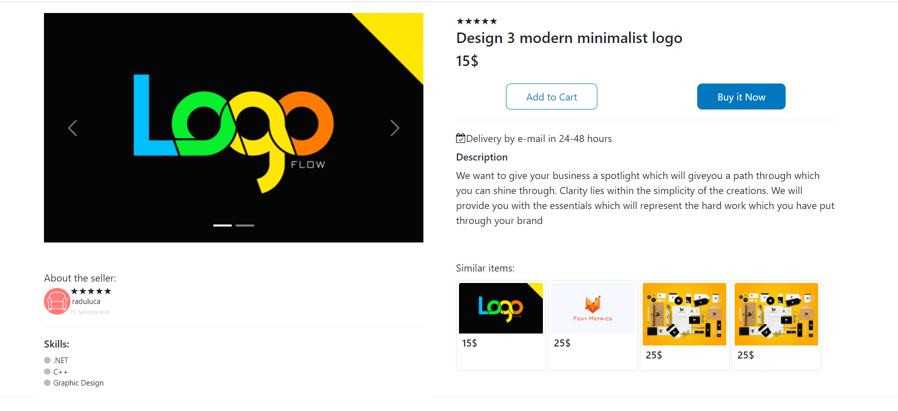
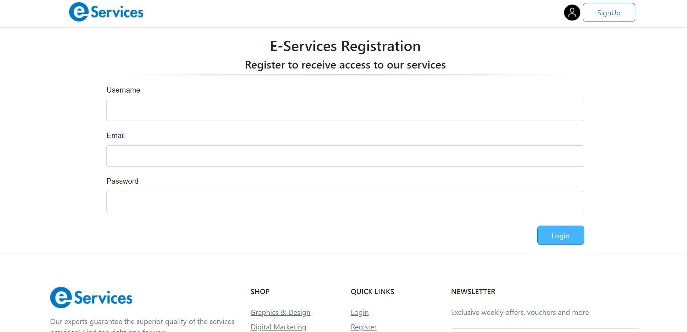

The purpose of this report is to present the HCI principles, methods and best practices based on the software
developed for the license - web application Online Store.
Introduction
In this article I will discuss 3 ideas / concepts regarding project design, including sketches, wireframes,
storyboards and other prototypes.
I will also present 5 used interaction design patterns where I will discuss the problem that solves it, when to
use it and why.
In additional I will list and discuss about 4 Person interacting with the software program.
Questions, Options, Criteria
The QOC method is used to decide how to create a rational design.
Product design presentation - single page product
In the following figure I represented the design of a product :
I want to specify that the page design is not completely finished because the software application is in
progress.
QOC 1: Where do I place product images ?
Question : Where do I place product images ?
Option 1 : Top left of the page
Option 2 : Top right of the page
Criteria 1 : Easy to read and capture the user's attention because we are used to reading from left to
right
Criteria 2 : Low user effort for the user to find the images of a product being one of the main reasons
when accessing the page
For option number 1 as a positive assessment are both criteria 1 and 2.
And for option number 2 as a positive assessment is criteria number 2 but as a negative assessment criteria
number 1.
In conclusion, I chose option number 1 to represent the product images at the top left of the page.
QOC 2: What information about the seller should I display on the product page?
Question : What information about the seller should I display on the product page?
Option 1 : Username of the seller with a link to the profile page
Option 2 : Username of the seller with a link to the profile page, profile picture, user rating and a
short description of the user's skills
Criteria 1 : Screen compactness
Criteria 2 : Low user effort to find information about who sells the product without leaving the product
page
Criteria 3 : Due to the displayed user rating, the credibility of the buyer increases, so it is closer to
the next step - to buy the product.
For option number 1 as a positive assessment are criteria 2 and 3 and respectively as a negative assessment
criteria 1.
And for option number 2 as a positive assessment is criteria number 1 but as a negative assessment criteria
number 2 and 3.
In conclusion, I chose option number 2 to display Username of the seller with a link to the profile page,
profile picture, user rating and a short description of the user's skills.
QOC 3: What marketing strategies should I display on the product page?
Question : What marketing strategies should I display on the product page?
Option 1 : Similar products
Option 2 : Bundles of frequently bought products together
Criteria 1 : Continuous information about other products of the site with minimal effort for the user
Criteria 2 : Screen compactness
For option number 1 as a positive assessment are criteria 1 and respectively as a negative assessment criteria
2.
And for option number 2 as a positive assessment is criteria number 1 but as a negative assessment are also
criteria number 2.
In conclusion, I could have chosen any of the options but I decided to develop the option with similar products.

Product page with similar products, images, seller information
Interaction Design Patterns
An interaction design pattern is a general repeatable solution to a commonly-occurring usability problem in
interface design or interaction design.
For the following interaction design patterns I will specify what the problem is, the solution, when to use it and examples based on my application.
Lazy Registration
Problem: Many users when they arrive on the site are not interested in going through the whole registration process just to have access to the information provided by the developer so they may leave the application before they know what it offers.
Solution: This design pattern allows the user to access the information provided by the application and when it is only absolutely necessary to register
When to use: Use this design pattern when you don't give visitors access to sensitive information or when you don't need to know the user's information to interact with the app.
About my application: In my application any visitor can access the product pages can see the profile of the sellers and pages such as about us, contact us etc. The user is obliged to register when he wants to buy a product or when he wants to become a seller to place products on the site.
Clear Primary Actions
Problem: Many users when they are on a page that requires action on their part do not know what to do next and need buttons clearly highlighted with the name of the action.
Solution: Create the button design so that it stands out to suggest to the user what action to take.
When to use: It is used whenever a form is completed and an action is to be interpreted. For example, submit a form.
About my application: In my web application I highlighted the buttons when you submit a form or when you are on a product page and the next step is to click on the "Buy now" button that is highlighted.

Clear primary action - Submit button
Dark Patterns
Problem: They are used to force an action that the user has preset at the beginning. For example, the newsletter subscription button is checked when you register, but it can be unchecked at any time.
Solution: Dark patterns are widely used in e-commerce platforms to lead or trick users into performing certain actions. To use dark patterns responsibly, you must be ethical and have empathy with your users.
When to use: When you recommend an action to the user to take it but also give him free choice.
About my application: In my application I will use it to check the mail subscription box in order to get as large an email base as possible and then to create a relationship with my users to turn them into customers.
It needs to be implemented in the future
Subscription Plans
Problem: The users of the application can be classified in different categories and in order to differentiate them, they offer them subscription plans (including sign up).
Solution: Offer users an options menu for joining at certain rates or free.
When to use: When your application can clearly classify users into at least 2 categories.
About my application: My classic application users in 3 categories: visitors, customers and sellers. To be a user you have to register and to become a seller you need to make a request that must be approved by the administrator.
Subscription Plans - Register
Gallery
Problem: The user needs to browse a collection of high quality images
Solution: A gallery consists of multiple images that can be browsed one by one by navigating between them. Only one image is viewed at a time
When to use: Use when the user needs to browse through a series of images in a sequential way.
About my application: We used Gallery Design Pattern when users visit a product page to access a series of images with that product.
Gallery images
Personas
Primary first persona
Type: Primary
Name: Crudu Angel
Date of Birth: 11/11/1970
Gender: Male
Location: Bucuresti, Romania
Work place: Entrepreneur
School: Faculty of Law, University of Bucharest
Detailed Description:
Crudu Angel is a 10-year-old former entrepreneur who runs a successful business. Being an older person, surfing the internet is not his strong point. Angel has decided to expand his online business and needs services to run a shopify online store. The cost of such a service is high due to the level of difficulty and responsibility. Once Angel has reached the service purchase platform he would like to get as much information as possible about that service, who sells it and how the process goes. He has all the time in the world to analyze and his experience tells him to take the time to check every detail.
Main Points:
He has no experience interacting with my application
He wants as much detail as possible, maybe even talking to an assistant
The design is less relevant as long as the text is clear
Goals:
Expanding your business online
Frustrations and Pain Points:
It's hard to browse the internet
He may cancel the purchase of the service at any time due to lack of detailed information
Scenarios:
The service will be used when Angel needs people with experience in e-commerce. When you find the right service you will have huge expectations and any failure will be attributed directly to the online platform, not the seller.
Primary second persona
Type: Primary
Name: Andronache Cristina
Date of Birth: 07/04/1990
Gender: Female
Location: Iasi, Romania
Work place: Endava, Software developer
School: UAIC, Computer Science
Detailed Description:
Andronache Cristina is a young programmer who loves the business world. In his free time he started to create a company that wants to bring furniture from all over Europe and make it available on the Romanian market. In order to sustain his business, he needs people with experience in online marketing. Once he interacts with my application and finds the service he needs, he wants to do some checks to make sure the quality is guaranteed. Because he is a person with a full time job, the time dedicated to the business is limited and he would like to have as much information as possible available on the product page.
Main Points:
He wants to spend as little time as possible in choosing the product
Because he is a programmer he can quickly notice a low quality design that does not inspire confidence
Goals:
Avoid wasting time
Be as productive as possible
Creating your own business and closing the job full time
Frustrations and Pain Points:
Long service delivery time
Product quality is never guaranteed when you use online services
Scenarios:
She will use the online shopping store when Cristina needs help in areas she can't handle or when she doesn't have enough time. Some scenarios are online marketing, business website design, market research, virtual assistant, etc.
Secondary thrid persona
Type: Secondary
Name: Almes Ion
Date of Birth: 08/05/1993
Gender: Male
Location: Iasi, Romania
Work place: Influencer
School: Secondary education
Detailed Description:
Almes Ion is an influencer known in the online environment in Romania. In the last year, online revenues have started to decline and sponsorships have disappeared. The solution he thought of is to provide his services to offer online advertising to authorized brands in Romania. By accessing the application, he wants to convince himself that the site is an authorized one and placing his ad will guarantee him a good reputation in the online environment.
Main Points:
He wants to do some research of the application's market
He wants to make sure the store is legit
He wants you to place his services to benefit the users of the platform
Goals:
To make money
Create sponsorship ads for a fee
Creating a community of customers who will buy the service again
Frustrations and Pain Points:
Some available low quality services will make you look for another platform
The design of the application for an online person can be difficult to suit
Scenarios:
Ion wants to place his service on the online platform but not before making sure that it will not damage his reputation and the customer community is a target for his product.